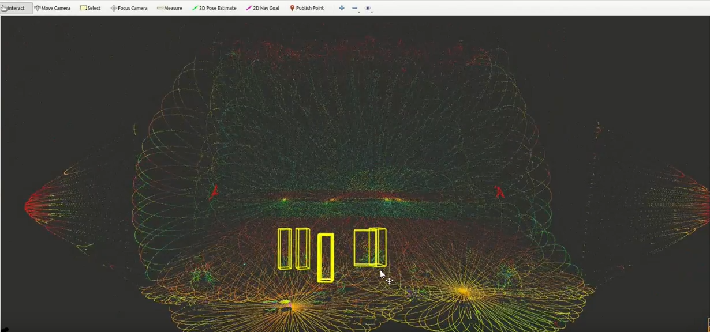
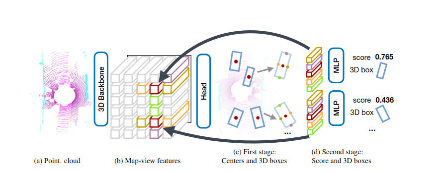

Person Detection and Tracking in a Hall using Multiple 3D Lidar Configurations
Advanced multi-person tracking system using 6 Livox lidars to detect and track people in real-time within a hall environment.
Project Overview
The purpose of this project was to track multiple people in real-time with a defined tracking space. Lidar was chosen for this type of tracking application as it is used in a dark hall and the only light is from animations displayed by the projectors. The surface of the hall is not flat, and targets may be stationary, seated or moving. The positions are further streamed over ethernet to another system for a myriad of interactive applications.
Technical Process
The first phase requires merging lidar data, transformations are applied to cater for various lidar positioning. These are further combined to a single pointcloud that covers the entire space.
Next, ground removal techniques are applied on merged pointcloud and cropped to focus on the region of interest using PCL library, then resulting pointcloud is further streamed to the next phase whereby deep learning techniques (using CenterPoint) are applied to find the position of each person.
Each individual is given a unique ID and a bounding box is drawn around the person. The ID, x and y coordinates are then sent to the next phase, where they are used as inputs for Unreal Engine for an interactive experience, where dynamic animations are projected on the floors and walls. This solution was tested in simulation and with live data.
CenterPoint Detection Framework
Above shows the two stage CenterPoint model used to detect each individual. This is real-time and performed on ROS topic as the data arrives. The solution does not require a map.
Simulation of the Hall in Gazebo ROS
Above shows a 3D model of the hall in Gazebo
Live Sensor Data and Simulated Results in RViz
References
Research Paper: https://arxiv.org/pdf/2006.11275.pdf